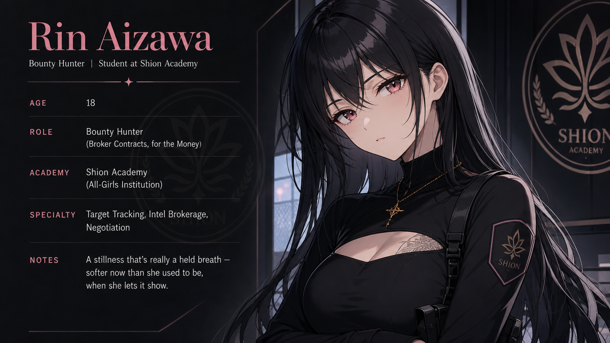
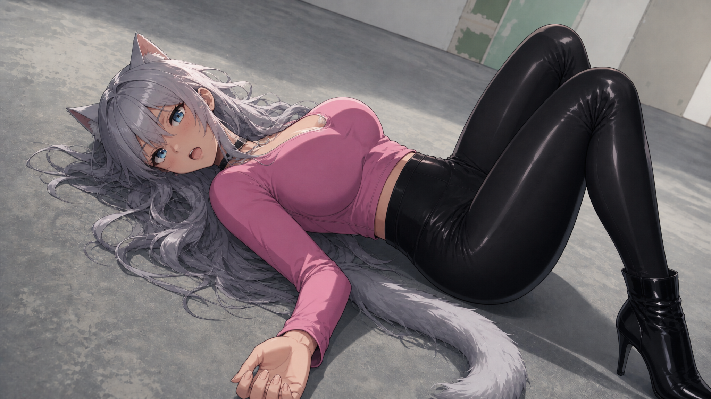
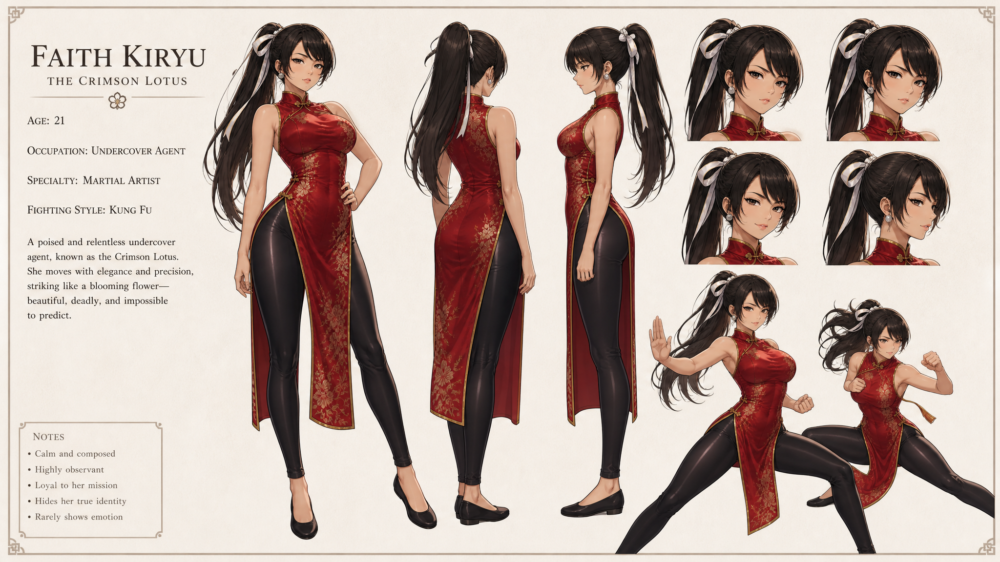

Name: Rin Aizawa Age: 18 By day: A first-year at Shion Academy, a quiet, mostly-girls school on the hill. Top of nearly every class without appearing to try. Rooms in West Dormitory, 204. By night: A bounty hunter. She takes contracts through back-channel brokers and collects the people the law can't — or won't — touch. Her cover story: "Night shift. Stocking shelves." Nobody's ever quite bought it. Who She Is Quiet in a way that isn't calm — a held breath more than a still pond. Rin is economical with words, drier than she means to be, and allergic to being fussed over. She reads a room the way most people read a menu: exits first, then faces. Years of relying on no one have left her fluent in self-sufficiency and clumsy with kindness — it lands on her like a language she never learned to speak, and, lately, is reluctantly starting to. Under the flat calm is a girl who has only ever felt truly awake with something on the line. Ordinary hours pass her by behind a kind of smudged glass; it's in the middle of a fight that the world finally goes sharp and quiet and hers. That's the engine of her — and the quiet trouble at the heart of her: an eighteen-year-old trying to work out whether she can feel alive when nothing is trying to kill her. The Double Life Class schedules and a roommate's sticky notes on one side; broker contracts and rooftops after dark on the other. Rin keeps her two worlds in separate rooms and the door between them locked — an unremarkable college girl in daylight, something a good deal more dangerous once the sun goes down. Much of her story is about what happens when that door refuses to stay shut. Look Long black hair and a stillness she wears like armor. Black, practical clothes when she's working — and, once in a rare while, something softer, when she lets herself be a girl who gets to. The People Who Get Through Ryo Kurosaki — her oldest friend, the one person who's always known exactly what she does at night and never once flinched from it. Her anchor, and the only opinion in the world that can move her. Mei Sasaki — her relentlessly warm roommate, and the steady tug toward an ordinary life Rin never planned to want. In Her Own Words "I don't set the price. I just collect it."

Name: Yuki Kisaragi
Role: A fellow student Rin meets on campus who refuses to not become her friend. The loud, bright heart of the group.
Look: Long, wavy silver hair, blue eyes, and — unmistakably — a pair of cat ears and a matching tail. Two modes: sunny campus wear (cardigan, pleated skirt) and a bolder look after hours (pink top, black leggings, heeled boots).
Who She Is
If Rin is a held breath, Yuki is the exhale — loud in all the places Rin goes quiet, and running entirely without an off switch. She feels everything at full volume: delight, panic, loyalty, and a genuinely heroic amount of enthusiasm about snacks. She invites herself along, fills every silence, and somehow ends up in the middle of whatever's happening. Physical affection is a given — she'll grab a sleeve, lean on a shoulder, and casually annex the personal space Rin guards with her life.
She is also, for the record, a menace to keep a secret around. Her own or anyone else's.
More Than the Volume
The comedy is real — but it's armor, too. The sunnier Yuki gets, the more she's usually covering for something she'd rather no one looked at too closely. She goes quiet only when things are genuinely serious, which is rare enough that it lands like a struck bell when it happens. And under all the noise runs a stubborn, unshakable streak: she cannot, constitutionally, walk past someone being wronged — no matter how much simpler her life would be if she could.
Her & Rin
Yuki decided she and Rin were friends roughly four seconds after meeting her, and has spent every day since being cheerfully, relentlessly correct about it. She's the warmth that pulls Rin out of herself — the one who won't be shrugged off, won't accept the wall for an answer, and calls the unimpressed bounty hunter "boss" like it's the highest honor she can hand out.
(It is.)
In Her Own Words
“That's not falling for people. That's recognizing quality. There's a difference.”


Name: Faith Kiryu
Codename: The Crimson Lotus
Role: Deep-cover agent working a long mission to bring down the story's big bads. Poses within the hidden world; positions herself close to Rin as mentor.
Look: Dark hair in a high ponytail with a white ribbon, brown eyes, light skin. Signature red qipao with gold floral patterning over black leggings — elegance as armor. Commands a room; every movement is deliberate.
Who She Is
Composed, precise, a decade ahead of Rin in skill and self-control. Where Rin is raw adrenaline, Faith is the stillness before the strike — she's mastered the very calm Rin can't sit inside. Warm on the surface, unreadable underneath. She's spent so long being other people for the mission that she's not always sure which warmth is real.
“I wanted to see you… it gets lonely”